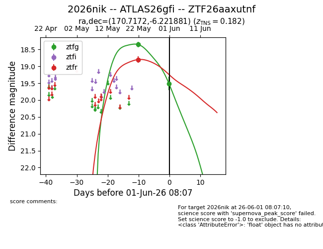
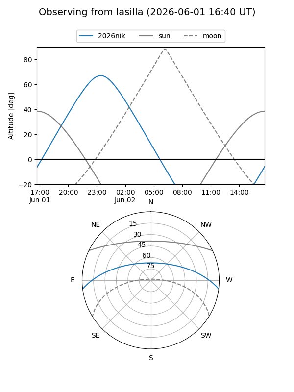
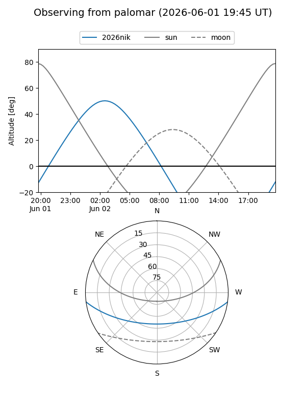
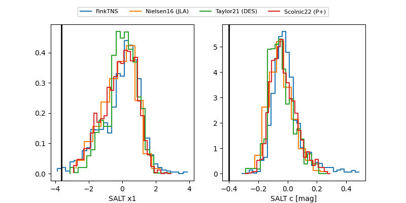

2026nik
Target 2026nik at 2026-06-01 08:08
Aliases and brokers:
lsst-FINK: link
lsst-Lasair: link
lsst-ALeRCE: link
ztf-FINK: link
ztf-Lasair: link
ztf-ALeRCE: link
TNS: link
YSE: link
alt names
ZTF26aaxutnf (ztf,fink_ztf)
2026nik (tns,yse)
ATLAS26gfi (atlas)
Coordinates:
equatorial (ra, dec) = 170.7172,-6.22188
equatorial (HMS+DMS) = 11:22:52.12,-06:13:18.77
galactic (l, b) = (266.9641,+50.36081)
Flags:
TNS confirmed: nan
TNS redshift: 0.182
Photometry:
last ztfg=19.51, ztfr=18.80
2 ztfg, 1 ztfr detections
Lightcurve

Visibility


Additional plots
